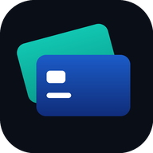

stackNtrackLast updated 29 July 2026
stackNtrack helps you keep track of the benefits and credits your credit cards already provide, and warns you before they expire. This policy explains exactly what the app stores, why, and how to remove it.
The short version. stackNtrack never asks for your bank login, card number, or account access. It stores which cards you say you hold, which credits you mark as used, and any notes you write. There are no advertisements, no analytics, and no tracking of any kind. Nothing is sold or shared with anyone for marketing.
stackNtrack has no connection to your financial institutions. It cannot see your accounts, and it works entirely from information you enter yourself.
| Data | Why |
|---|---|
| Email address | To create your account, sign you in, and send password resets. |
| Password | Stored only as a cryptographic hash by our authentication provider. It is never stored in readable form and cannot be recovered or viewed by anyone, including us. |
| Cards you select | The card names you choose from our catalogue, so we can show the right benefits. This is a list of card products, not accounts. |
| Account anniversary dates | Optional. Only the month, day, and year you type in, used to calculate exact benefit deadlines. |
| Usage marks | Which credits you have flipped to "used", so your dashboard and totals stay accurate. |
| Your notes | Any text you add to a credit or card. Limited to 100 characters each. Visible only to you. |
| Display preferences | Credits you have hidden, and the order you have arranged them in. |
| Push notification token | Only if you turn on expiry reminders. A token issued by your browser that lets us send you a notification. It does not identify you personally to us and can be revoked at any time. |
Our hosting provider keeps standard server logs, which include your IP address, browser type, and the pages requested. These are used to serve the site, prevent abuse, and diagnose faults. We do not combine them with your account, and we do not use them to build a profile of you.
Your device also stores two small local flags — whether you dismissed the install prompt, and whether you were offered notifications — so the app does not ask twice. These stay on your device.
We process this information to provide the service you asked for. Where the law requires a legal basis (for example under the UK and EU GDPR), ours is performance of a contract for account and dashboard data, and consent for push notifications, which you may withdraw at any time.
We use a small number of service providers. They process data on our instructions and are not permitted to use it for their own purposes.
| Provider | Role |
|---|---|
| Supabase | Stores your account and dashboard, and handles sign-in. |
| Cloudflare | Hosts and delivers the app; keeps server logs. |
| Google Fonts | Serves the two typefaces the app uses. Google receives your IP address as part of that request. |
| Push services | If you enable reminders, your browser's push service (for example Google, Apple, or Mozilla, depending on your device) delivers the message. |
We do not use advertising networks, analytics platforms, data brokers, or social media trackers. We have never sold personal information and have no plans to.
Our providers may process data on servers outside your country, including in the United States. Where required, transfers rely on appropriate safeguards such as Standard Contractual Clauses.
Your account and dashboard are kept for as long as your account exists. If you reset your dashboard, that content is deleted immediately. If you ask us to delete your account, we remove it and its data within 30 days. Server logs are retained for a short period by our hosting provider and then discarded.
Depending on where you live you may also have the right to object to processing, request a portable copy of your data, or complain to your data protection authority. Contact us and we will help.
To delete your account and everything associated with it, email PUT_YOUR_EMAIL_HERE from the address you signed up with, with the subject Delete my account.
We will confirm and remove your account, dashboard, notes, and any push notification token within 30 days. Resetting your dashboard in the app deletes your data immediately but keeps your sign-in, so email us if you want the account itself removed too.
Connections use HTTPS. Passwords are hashed by our authentication provider and are never visible to us. Each account's data is isolated at the database level, so one signed-in person cannot read another's information. That said, no online service can promise perfect security, and you should use a strong, unique password.
stackNtrack is not intended for anyone under 13, and we do not knowingly collect information from children. If you believe a child has created an account, contact us and we will remove it.
If we make a material change we will update the date at the top of this page and, where appropriate, notify you in the app. Continuing to use stackNtrack after a change means you accept the updated policy.
Questions about this policy or your data: PUT_YOUR_EMAIL_HERE